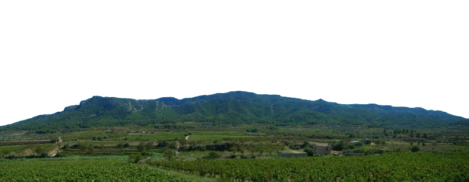
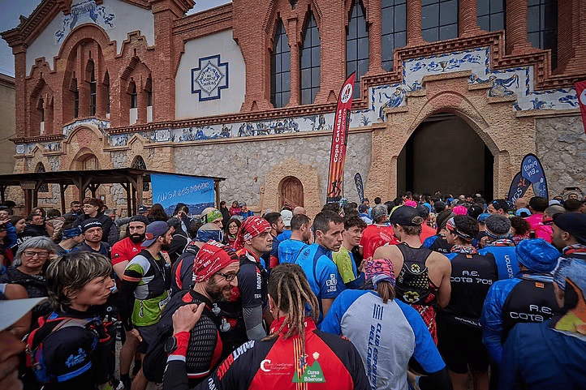
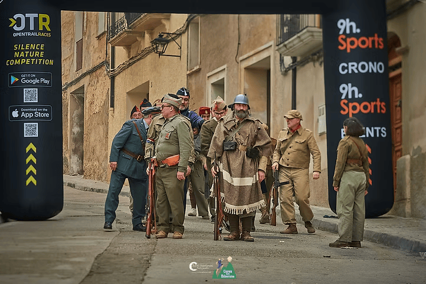
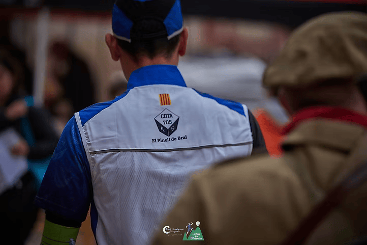

Una experiència esportiva espectacular al cor de la Terra Alta. Curses per a totes les edats.
Ambient espectacular, recorreguts únics i una identitat visual moderna amb tons blaus i verds inspirats directament en el logo.

Descobreix totes les modalitats: Absoluta, Júnior, Juvenil i Exprés. Troba la teva cursa ideal.

Uneix-te a la caminada familiar de 13 km. Perfecte per gaudir de la natura amb tots els públics.

Tot el que necessites: avituallaments, pàrquing, càmping gratuït, dutxes i molt més.